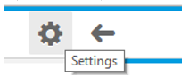

When developing OpenUI5 applications, you need to pay attention to the correctness of the resulting HTML. Some vital accessibility features (screen reader and keyboard support) rely on a correct and meaningful structure of the application.
|
Rules and Recommendations |
Details |
|---|---|
|
Don't change the HTML |
Theming (CSS selectors), keyboard handling (tab order) and screen reader support are tightly coupled with the HTML structure of the generated pages. If you change the structure of the elements (for example, from custom JavaScript, HTML or CSS), this could break some or all of the accessibility aspects. In addition, it makes debugging the application more difficult. |
|
Check the focus persistence |
When opening or closing a dialog or navigating between pages, the focus should stay on
the same control as it was on before opening or navigating. If
the control no longer exists, the focus should be put on its
parent (for example, if the control was inside an action sheet,
set the focus on the button which opened the action sheet).
Note
When the parent control cannot receive focus or is no longer available, the focus should go to a control nearby. |
|
Initial focus position |
Within an application, the inital focus should be placed on the element that is most likely to be edited or interacted with first (for example, mandatory fields on a form). When opening dialogs or new pages, the focus should be on the first focusable element inside the content area. Tip
On touch devices, if the first focusable element is a control that would open the soft keyboard, it is better to place the focus elsewhere - on the footer of the dialog or on a control that requires no keyboard input. A good practice is to set the focus on the first mandatory element. |
|
Don't interfere with existing accessibility features |
Overriding code, for example the keyboard tab order, will impact the correct handling and may break the accessibility of the whole application. |
|
Make sure that each component has a unique ID |
The OpenUI5 framework handles the creation of unique IDs automatically. If you pass IDs yourself, make sure that they are unique within the whole application. For more information, see the Related Information section. |
|
Provide meaningful tooltips for icons, icon buttons and where otherwise appropriate |
Provide a text alternative for non-text elements and the necessary additional information, in case the text space is insufficient. You should use a tooltip as a label for unlabeled elements only. Additionally, a Placeholder can be used as a label if it is not a formatting hint. Example 
|
If you are developing your own controls, follow the guidelines listed under Related Information.
Does it have a label or a tooltip (hover with the mouse)?
Is this also true for each input field or for a sequence of input fields? (For example: street and number)?
Is this also true for buttons, icons and images?
Is this also true for grouped information?
Is the user informed about the required entries and input?